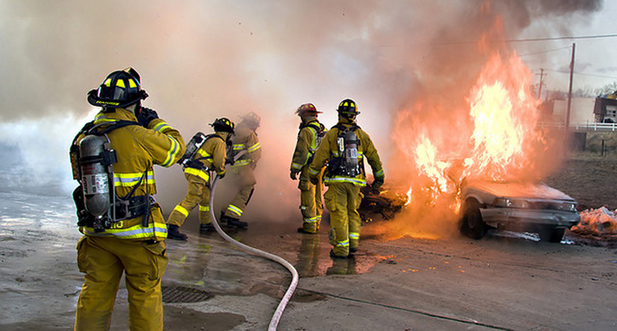
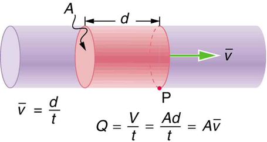
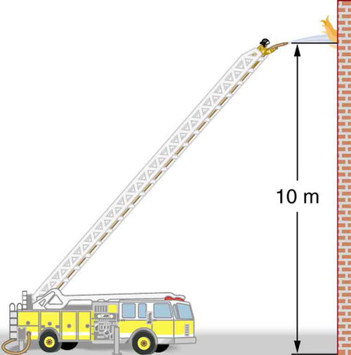
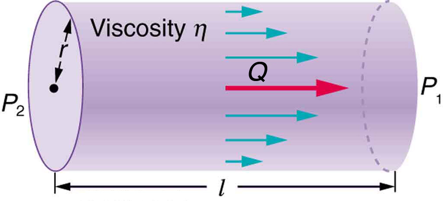
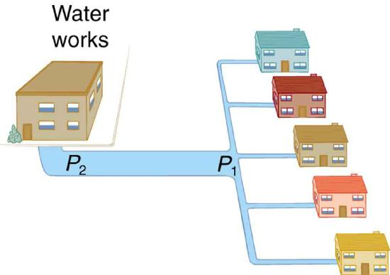
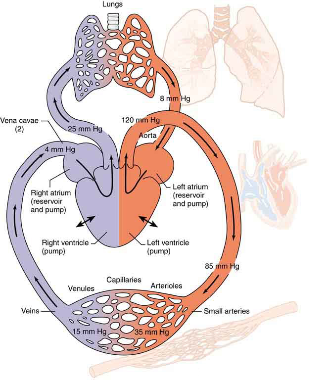

- Calculate flow rate.
- Define units of volume.
- Describe incompressible fluids.
- Explain the consequences of the equation of continuity.
Flow rate \(Q\) is defined to be the volume of fluid passing by some location through an area during a period of time, as seen in Figure . In symbols, this can be written as
where \(V\) is the volume ant \(t\) is the elapsed time.
The SI unit for flow rate is \(m^3/s\), but a number of other units for \(Q\) are in common use. For example, the heart of a resting adult pumps blood at a rate of 5.00 liters per minute (L/min). Note that aliter(L) is 1/1000 of a cubic meter or 1000 cubic centimeters (\(10^{-3} \, m^3\) or \(10^3 \, cm\)). In this text we shall use whatever metric units are most convenient for a given situation.

How many cubic meters of blood does the heart pump in a 75-year lifetime, assuming the average flow rate is 5.00 L/min?
Time and flow rate \(Q\) are given, and so the volume \(V\) can be calculated from the definition of flow rate.
Solving \(Q = V/t\) for volume gives
Substituting known values yields
This amount is about 200,000 tons of blood. For comparison, this value is equivalent to about 200 times the volume of water contained in a 6-lane 50-m lap pool.
Flow rate and velocity are related, but quite different, physical quantities. To make the distinction clear, think about the flow rate of a river. The greater the velocity of the water, the greater the flow rate of the river. But flow rate also depends on the size of the river. A rapid mountain stream carries far less water than the Amazon River in Brazil, for example. The precise relationship between flow rate \(Q\) and velocity \(\overline{v}\) is
where \(A\) is the cross-sectional area and \( \overline{v}\) is the average velocity. This equation seems logical enough. The relationship tells us that flow rate is directly proportional to both the magnitude of the average velocity (hereafter referred to as the speed) and the size of a river, pipe, or other conduit. The larger the conduit, the greater its cross-sectional area. Figure illustrates how this relationship is obtained. The shaded cylinder has a volume
which flows past the point \(P\) in a time \(t\). Dividing both sides of this relationship by \(t\) gives
We note that \(Q = V\t\) and the average speed is \(\overline{v} = d/t\). Thus the equation becomes \(Q = A\overline{v}\).
Figure shows an incompressible fluid flowing along a pipe of decreasing radius. Because the fluid is incompressible, the same amount of fluid must flow past any point in the tube in a given time to ensure continuity of flow. In this case, because the cross-sectional area of the pipe decreases, the velocity must necessarily increase. This logic can be extended to say that the flow rate must be the same at all points along the pipe. In particular, for points 1 and 2,
This is called the equation of continuity and is valid for any incompressible fluid. The consequences of the equation of continuity can be observed when water flows from a hose into a narrow spray nozzle: it emerges with a large speed—that is the purpose of the nozzle. Conversely, when a river empties into one end of a reservoir, the water slows considerably, perhaps picking up speed again when it leaves the other end of the reservoir. In other words, speed increases when cross-sectional area decreases, and speed decreases when cross-sectional area increases.
![The figure shows a cylindrical tube broad at the left and narrow at the right. The fluid is shown to flow through the cylindrical tube toward right along the axis of the tube. A shaded area is marked on the broader cylinder on the left. A cross section is marked on it as A one. A point one is marked on this cross section. The velocity of the fluid through the shaded area on narrow tube is marked by v one as an arrow toward right. Another shaded area is marked on the narrow cylindrical on the right. The shaded area on narrow tube is longer than the one on broader tube to show that when a tube narrows, the same volume occupies a greater length. A cross section is marked on the narrow cylindrical tube as A two. A point two is marked on this cross section. The velocity of fluid through the shaded area on narrow tube is marked v two toward right. The arrow depicting v two is longer than for v one showing v two to be greater in value than v one.](images/ch12/fig12-3-the-figure-shows-a-cylindrical-tube-broa.jpg)
Since liquids are essentially incompressible, the equation of continuity is valid for all liquids. However, gases are compressible, and so the equation must be applied with caution to gases if they are subjected to compression or expansion.
A nozzle with a radius of 0.250 cm is attached to a garden hose with a radius of 0.900 cm. The flow rate through hose and nozzle is 0.500 L/s. Calculate the speed of the water (a) in the hose and (b) in the nozzle.
We can use the relationship between flow rate and speed to find both velocities. We will use the subscript 1 for the hose and 2 for the nozzle.
First, we solve \(Q = A\overline{v}\) for \(v_1\) and note that the cross-sectional area is \(A = \pi r^2\), yielding
Substituting known values and making appropriate unit conversions yields
We could repeat this calculation to find the speed in the nozzle \(\overline{v}_2\), but we will use the equation of continuity to give a somewhat different insight. Using the equation which states
solving for \(\overline{v}_2\) and substituting \(\pi r^2\) for the cross-sectional area yields
Substituting known values,
A speed of 1.96 m/s is about right for water emerging from a nozzleless hose. The nozzle produces a considerably faster stream merely by constricting the flow to a narrower tube.
The solution to the last part of the example shows that speed is inversely proportional to the square of the radius of the tube, making for large effects when radius varies. We can blow out a candle at quite a distance, for example, by pursing our lips, whereas blowing on a candle with our mouth wide open is quite ineffective.
In many situations, including in the cardiovascular system, branching of the flow occurs. The blood is pumped from the heart into arteries that subdivide into smaller arteries (arterioles) which branch into very fine vessels called capillaries. In this situation, continuity of flow is maintained but it is the sum of the flow rates in each of the branches in any portion along the tube that is maintained. The equation of continuity in a more general form becomes
where \(n_1\) and \(n_2\) are the number of branches in each of the sections along the tube.
The aorta is the principal blood vessel through which blood leaves the heart in order to circulate around the body. (a) Calculate the average speed of the blood in the aorta if the flow rate is 5.0 L/min. The aorta has a radius of 10 mm. (b) Blood also flows through smaller blood vessels known as capillaries. When the rate of blood flow in the aorta is 5.0 L/min, the speed of blood in the capillaries is about 0.33 mm/s. Given that the average diameter of a capillary is \(8.0 \, \mu m\), calculate the number of capillaries in the blood circulatory system.
We can use \(Q = A\overline{v}\) to calculate the speed of flow in the aorta and then use the general form of the equation of continuity to calculate the number of capillaries as all of the other variables are known.
The flow rate is given by \(Q = A\overline{v}\) or \(\overline{v} = \frac{Q}{\pi r^2} \) for a cylindrical vessel.
Substituting the known values (converted to units of meters and seconds) gives
Using \(n_1A_1\overline{v}_1 = n_2A_2\overline{v}_1\), assigning the subscript 1 to the aorta and 2 to the capillaries, and solving for \(n_2\) (the number of capillaries) gives \(n_2 = \frac{n_1A_1\overline{v}_1}{A-2\overline{v}_2}.\) Converting all quantities to units of meters and seconds and substituting into the equation above gives
Note that the speed of flow in the capillaries is considerably reduced relative to the speed in the aorta due to the significant increase in the total cross-sectional area at the capillaries. This low speed is to allow sufficient time for effective exchange to occur although it is equally important for the flow not to become stationary in order to avoid the possibility of clotting. Does this large number of capillaries in the body seem reasonable? In active muscle, one finds about 200 capillaries per \(mm^3\), or about \(200 \times 10^6\) per 1 kg of muscle. For 20 kg of muscle, this amounts to about \(4 \times 10^9\) capillaries.×109
📖 OpenStax College Physics, Section 12.01. openstax.org · CC BY 4.0
- Explain the terms in Bernoulli’s equation.
- Explain how Bernoulli’s equation is related to conservation of energy.
- Explain how to derive Bernoulli’s principle from Bernoulli’s equation.
- Calculate with Bernoulli’s principle.
- List some applications of Bernoulli’s principle.
When a fluid flows into a narrower channel, its speed increases. That means its kinetic energy also increases. Where does that change in kinetic energy come from? The increased kinetic energy comes from the net work done on the fluid to push it into the channel and the work done on the fluid by the gravitational force, if the fluid changes vertical position. Recall the work-energy theorem,
There is a pressure difference when the channel narrows. This pressure difference results in a net force on the fluid: recall that pressure times area equals force. The net work done increases the fluid’s kinetic energy. As a result, thepressure will drop in a rapidly-moving fluid, whether or not the fluid is confined to a tube.
There are a number of common examples of pressure dropping in rapidly-moving fluids. Shower curtains have a disagreeable habit of bulging into the shower stall when the shower is on. The high-velocity stream of water and air creates a region of lower pressure inside the shower, and standard atmospheric pressure on the other side. The pressure difference results in a net force inward pushing the curtain in. You may also have noticed that when passing a truck on the highway, your car tends to veer toward it. The reason is the same—the high velocity of the air between the car and the truck creates a region of lower pressure, and the vehicles are pushed together by greater pressure on the outside (Figure This effect was observed as far back as the mid-1800s, when it was found that trains passing in opposite directions tipped precariously toward one another.
![An overhead view of a car passing by a truck on a highway toward left is shown. The air passing through the vehicles is shown using lines along the length of both the vehicles. The lines representing the air movement has a velocity v one outside the area between the vehicles and velocity v two between the vehicles. v two is shown to be greater than v one with the help of a longer arrow toward right. The pressure between the car and the truck is represented by P i and the pressure at the other ends of both the vehicles is represented as P zero. The pressure P i is shown to be less than P zero by shorter length of the arrow. The direction of P i is shown as pushing the car and truck apart, and the direction of P zero is shown as pushing the car and truck toward each other.](images/ch12/fig12-4-an-overhead-view-of-a-car-passing-by-a-t.jpg)
Making Connections: Take Home Investigation with a Sheet of Paper:
Hold the short edge of a sheet of paper parallel to your mouth with one hand on each side of your mouth. The page should slant downward over your hands. Blow over the top of the page. Describe what happens and explain the reason for this behavior.
The relationship between pressure and velocity in fluids is described quantitatively byBernoulli’s equation, named after its discoverer, the Swiss scientist Daniel Bernoulli (1700–1782). Bernoulli’s equation states that for an incompressible, frictionless fluid, the following sum is constant:
where \(P\) is the absolute pressure, \(\rho\) is the fluid density, \(v\) is the velocity of the fluid, \(h\) is the height above some reference point, and \(g\) is the acceleration due to gravity. If we follow a small volume of fluid along its path, various quantities in the sum may change, but the total remains constant. Let the subscripts 1 and 2 refer to any two points along the path that the bit of fluid follows; Bernoulli’s equation becomes:
Bernoulli’s equation is a form of the conservation of energy principle. Note that the second and third terms are the kinetic and potential energy with \(m\) replaced by \(\rho\). In fact, each term in the equation has units of energy per unit volume. We can prove this for the second term by substituting \(\rho = m/V\) into it and gathering terms:
So \(\frac{1}{2}\rho v^2\) is the kinetic energy per unit volume. Making the same substitution into the third term of Equation \ref{eq3}, we find
so \(\rho gh\) is the gravitational potential energy per unit volume. Note that pressure \(P\) has units of energy per unit volume, too. Since \(P = F/A\), its units are \(N/m^2\). If we multiply these by m/m, we obtain \(N \cdot m/m^3 = J/m^3\), or energy per unit volume. Bernoulli’s equation is, in fact, just a convenient statement ofconservation of energy for an incompressible fluid in the absence of friction.
Making Connections: Conservation of Energy
Conservation of energy applied to fluid flow produces Bernoulli’s equation. The net work done by the fluid’s pressure results in changes in the fluid’s \(KE\) and \(PE_g\) per unit volume. If other forms of energy are involved in fluid flow, Bernoulli’s equation can be modified to take these forms into account. Such forms of energy include thermal energy dissipated because of fluid viscosity.
The general form of Bernoulli’s equation has three terms in it (Equation \ref{eq1}), and it is broadly applicable. To understand it better, we will look at a number of specific situations that simplify and illustrate its use and meaning.
Let us first consider the very simple situation where the fluid is static—that is, \(v_1 = v_2 = 0\). Bernoulli’s equation in that case is
We can further simplify the equation by taking \(h_2 = 0\) (we can always choose some height to be zero, just as we often have done for other situations involving the gravitational force, and take all other heights to be relative to this). In that case, we get
This equation tells us that, in static fluids, pressure increases with depth. As we go from point 1 to point 2 in the fluid, the depth increases by \(h_1\), and consequently, \(P_2\) is greater than \(P_1\) by an amount \(\rho gh_1\). In the very simplest case, \(P_1\) is zero at the top of the fluid, and we get the familiar relationship \(P = \rho gh\). (Recall that \(P = \rho gh\) and \(\Delta PE_g = mgh\).) Bernoulli’s equation includes the fact that the pressure due to the weight of a fluid is \(\rho gh\). Although we introduce Bernoulli’s equation for fluid flow, it includes much of what we studied for static fluids in the preceding chapter.
Another important situation is one in which the fluid moves but its depth is constant—that is, \(h_1 = h_2\). Under that condition, Bernoulli’s equation becomes
Situations in which fluid flows at a constant depth are so important that this equation is often calledBernoulli’s principle. It is Bernoulli’s equation for fluids at constant depth. (Note again that this applies to a small volume of fluid as we follow it along its path.) As we have just discussed, pressure drops as speed increases in a moving fluid. We can see this from Bernoulli’s principle. For example, if \(v_2\) is greater than \(v_1\) in the equation, then \(P_2\) must be less than \(P_1\) for the equality to hold.
Previously, we found that the speed of water in a hose increased from 1.96 m/s to 25.5 m/s going from the hose to the nozzle. Calculate the pressure in the hose, given that the absolute pressure in the nozzle is \(1.01 \times 10^5 \, N/m^2\) (atmospheric, as it must be) and assuming level, frictionless flow.
Level flow means constant depth, so Bernoulli’s principle applies. We use the subscript 1 for values in the hose and 2 for those in the nozzle. We are thus asked to find \(P_1\).
Solving Bernoulli’s principle for \(P_1\) yields
Substituting known values,
This absolute pressure in the hose is greater than in the nozzle, as expected since \(v\) is greater in the nozzle. The pressure \(P_2\) in the nozzle must be atmospheric since it emerges into the atmosphere without other changes in conditions.
There are a number of devices and situations in which fluid flows at a constant height and, thus, can be analyzed with Bernoulli’s principle.
#### Application: Entrainment
People have long put the Bernoulli principle to work by using reduced pressure in high-velocity fluids to move things about. With a higher pressure on the outside, the high-velocity fluid forces other fluids into the stream. This process is calledentrainment. Entrainment devices have been in use since ancient times, particularly as pumps to raise water small heights, as in draining swamps, fields, or other low-lying areas. Some other devices that use the concept of entrainment are shown in Figure .
![Part a of the figure shows a rectangular section of a cylindrical Bunsen burner as a vertical column. The natural gas is shown to enter the rectangular column from the bottom upward. The air is shown to enter though a nozzle at the left side near the bottom part of the rectangular column and rise upward. Both air and natural gas are shown to rise up together along the length of the column, shown as vertical arrows along the length pointing upward. Part b of the figure shows an atomizer that uses a squeeze bulb in the shape of a small sphere to create a jet of air that entrains drops of perfume contained in a spherical bottomed container. The air is shown to come out of the squeeze bulb and the perfume is shown to rise up from the spherical bottomed container. Part c of the figure shows a common aspirator which contains a cylindrical tube held vertically. The tube is broader on the top and narrow at the bottom. Water is shown to enter the tube from the broader region and flow toward the narrow region. Air is shown to enter the cylindrical tube from the bottom part of the broader side and also flow toward the narrow tube. Part d of the figure shows the chimney of a water heater. Water heater is shown as a rectangular box at the bottom having a cylindrical section in the middle. The cylindrical section is broader at the bottom and narrow toward the top. Hot air is shown to rise up along the vertical section of the cylindrical tube. The chimney is conical at the bottom and rectangular upward and is shown above the rectangular water heater. The hot air enters the chimney at the conical end and rises upward. Cool air is shown to enter the chimney through the area between the rectangular section of heater and chimney from the two sides and rise up along the chimney with the hot air as shown by vertical arrows.](images/ch12/fig12-5-part-a-of-the-figure-shows-a-rectangular.jpg)
#### Application: Wings and Sails
The airplane wing is a beautiful example of Bernoulli’s principle in action. Figure \(\PageIndex{1a}\) shows the characteristic shape of a wing. The wing is tilted upward at a small angle and the upper surface is longer, causing air to flow faster over it. The pressure on top of the wing is therefore reduced, creating a net upward force or lift. (Wings can also gain lift by pushing air downward, utilizing the conservation of momentum principle. The deflected air molecules result in an upward force on the wing — Newton’s third law.) Sails also have the characteristic shape of a wing. (See Figure \(\PageIndex{1b}\).) The pressure on the front side of the sail, \(P_{front}\) is lower than the pressure on the back of the sail, \(P_{back}\). This results in a forward force and even allows you to sail into the wind.
![Part a of the figure shows a picture of a wing. It is in the form of an aerofoil. One side of the wing is broader and the other end tapers. The direction of the air is shown as lines along the length of the wing. The direction of the air below the wing is shown as flowing along the length of the wing. The pressure exerted by the air given by P b is upward. The direction of the air on the top or front part of the wing is shown as flowing along the length of the wing. The pressure exerted by the air is given by P f, and it acts downward. Part b of the figure shows a boat with a sail. The direction of the sail is almost across the boat. The direction of the air in the sail is shown by lines on the front and back sides of the sail. The air currents on the front exert a pressure P front toward the sail, and air currents on the back sides of sail exert a pressure P back again toward the sail.](images/ch12/fig12-6-part-a-of-the-figure-shows-a-picture-of-.jpg)
Making Connections: Take Home Investigation with Two Strips of Paper
For a good illustration of Bernoulli’s principle, make two strips of paper, each about 15 cm long and 4 cm wide. Hold the small end of one strip up to your lips and let it drape over your finger. Blow across the paper. What happens? Now hold two strips of paper up to your lips, separated by your fingers. Blow between the strips. What happens?
#### Application: Velocity Measurement
Figure shows two devices that measure fluid velocity based on Bernoulli’s principle. The manometer in Figure \(\PageIndex{1a}\) is connected to two tubes that are small enough not to appreciably disturb the flow. The tube facing the oncoming fluid creates a dead spot having zero velocity (\(v_1 = 0\)) in front of it, while fluid passing the other tube has velocity \(v_2\). This means that Bernoulli’s principle as stated in
Thus pressure \(P_2\) over the second opening is reduced by \(\frac{1}{2}\rho v_2^2\), and so the fluid in the manometer rises by \(h\) on the side connected to the second opening, where
(Recall that the symbol \(\propto\) means “proportional to.”) Solving for \(v_2\), we see that
Figure \(\PageIndex{1b}\) shows a version of this device that is in common use for measuring various fluid velocities; such devices are frequently used as air speed indicators in aircraft.
![Part a shows a U-shaped manometer tube connected to ends of two tubes which are placed close together. Tube one is open on the end and shows a velocity v one equals zero at the end. Tube two has an opening on the side and shows a velocity v two across the opening. The level of fluid in the U-shaped tube is more on the right side than on the left. The difference in height is shown by h. Part b of the figure shows a velocity measuring device a pitot tube. Two coaxial tubes, one broader outside and other narrow inside are connected to a U-shaped tube. The U-shaped tube is also narrow at one end and broader at the other. The narrow end of the U-shaped tube is connected to the narrow inner tube and the broader end of the U-shaped tube is connected to the broader outer tube. The tube one has an opening at one of its edges and the velocity of the fluid at the end is v one equals zero. Tube two has an opening on the side and shows a velocity v two across the opening. The level of fluid in the U-shaped tube is more on the right side than on the left. The difference in height is shown by h.](images/ch12/fig12-7-part-a-shows-a-u-shaped-manometer-tube-c.jpg)
📖 OpenStax College Physics, Section 12.02. openstax.org · CC BY 4.0
- Calculate using Torricelli’s theorem.
- Calculate power in fluid flow.
Figure shows water gushing from a large tube through a dam. What is its speed as it emerges? Interestingly, if resistance is negligible, the speed is just what it would be if the water fell a distance \(h\) from the surface of the reservoir; the water’s speed is independent of the size of the opening. Let us check this out.
![Part a of the figure shows a photograph of a dam with water gushing from a large tube at the base of a dam. Part b shows the schematic diagram for the flow of water in a reservoir. The reservoir is shown in the form of a triangular section with a horizontal opening along the base little near to the base. The water is shown to flow through the horizontal opening near the base. The height which it falls is shown as h two. The pressure and velocity of water at this point are P two and v two. The height to which the water can fall if it falls from a height h above the opening is given by h 2. The pressure and velocity of water at this point are P one and v one.](images/ch12/fig12-8-part-a-of-the-figure-shows-a-photograph-.jpg)
Bernoulli’s equation must be used since the depth is not constant. We consider water flowing from the surface (point 1) to the tube’s outlet (point 2). Bernoulli’s equation as stated in previously is
Both \(P_1\) and \(P_2\) equal atmospheric pressure (\(P_1\) is atmospheric pressure because it is the pressure at the top of the reservoir. \(P_2\) must be atmospheric pressure, since the emerging water is surrounded by the atmosphere and cannot have a pressure different from atmospheric pressure.) and subtract out of the equation, leaving
Solving this equation for \(v_2^2\) noting that the density \(\rho\) cancels (because the fluid is incompressible), yields
We let \(h = h_1 - h_2\), the equation then becomes
where \(h\) is the height dropped by the water. This is simply a kinematic equation for any object falling a distance \(h\) with negligible resistance. In fluids, this last equation is calledTorricelli’s theorem. Note that the result is independent of the velocity’s direction, just as we found when applying conservation of energy to falling objects.

All preceding applications of Bernoulli’s equation involved simplifying conditions, such as constant height or constant pressure. The next example is a more general application of Bernoulli’s equation in which pressure, velocity, and height all change. (SeeFigure.)
Fire hoses used in major structure fires have inside diameters of 6.40 cm. Suppose such a hose carries a flow of 40.0 L/s starting at a gauge pressure of \( 1.62 \times 10^6 \, N/m^2\). The hose goes 10.0 m up a ladder to a nozzle having an inside diameter of 3.00 cm. Assuming negligible resistance, what is the pressure in the nozzle?
Here we must use Bernoulli’s equation to solve for the pressure, since depth is not constant.
Bernoulli’s equation states
where the subscripts 1 and 2 refer to the initial conditions at ground level and the final conditions inside the nozzle, respectively. We must first find the speeds \(v_1\) and \(v_2\). Since \(Q = A_1v_1\), we get
(This rather large speed is helpful in reaching the fire.) Now, taking \(h_1\) to be zero, we solve Bernoulli’s equation for \(P_2\):
Substituting known values yields
This value is a gauge pressure, since the initial pressure was given as a gauge pressure. Thus the nozzle pressure equals atmospheric pressure, as it must because the water exits into the atmosphere without changes in its conditions.
Power is therateat which work is done or energy in any form is used or supplied. To see the relationship of power to fluid flow, consider Bernoulli’s equation:
All three terms have units of energy per unit volume, as discussed in the previous section. Now, considering units, if we multiply energy per unit volume by flow rate (volume per unit time), we get units of power. That is \((E/V)(V/t) = E/t\). This means that if we multiply Bernoulli’s equation by flow rate \(Q\), we get power. In equation form, this is
Each term has a clear physical meaning. For example, \(PQ\) is the power supplied to a fluid, perhaps by a pump, to give it its pressure \(P\). Similarly, \(\frac{1}{2}\rho v^2Q\) is the power supplied to a fluid to give it its kinetic energy. And \(\rho ghQ\) is the power going to gravitational potential energy.
Making Connections: Power
Power is defined as the rate of energy transferred, or \(E/t\). Fluid flow involves several types of power. Each type of power is identified with a specific type of energy being expended or changed in form.
Suppose the fire hose in the previous example is fed by a pump that receives water through a hose with a 6.40-cm diameter coming from a hydrant with a pressure of \(0.700 \times 10^6 \, N/m^2\). What power does the pump supply to the water?
Here we must consider energy forms as well as how they relate to fluid flow. Since the input and output hoses have the same diameters and are at the same height, the pump does not change the speed of the water nor its height, and so the water’s kinetic energy and gravitational potential energy are unchanged. That means the pump only supplies power to increase water pressure by \(0.92 \times 10^6 \, N/m^2\) (from \(0.700 \times 10^6 \, N/m^2 \) to \(1.62 \times 10^6 \, N/m^2)\).
As discussed above, the power associated with pressure is
Such a substantial amount of power requires a large pump, such as is found on some fire trucks. (This kilowatt value converts to about 50 hp.) The pump in this example increases only the water’s pressure. If a pump—such as the heart—directly increases velocity and height as well as pressure, we would have to calculate all three terms to find the power it supplies.
📖 OpenStax College Physics, Section 12.03. openstax.org · CC BY 4.0
- Define laminar flow and turbulent flow.
- Explain what viscosity is.
- Calculate flow and resistance with Poiseuille’s law.
- Explain how pressure drops due to resistance.
When you pour yourself a glass of juice, the liquid flows freely and quickly. But when you pour syrup on your pancakes, that liquid flows slowly and sticks to the pitcher. The difference is fluid friction, both within the fluid itself and between the fluid and its surroundings. We call this property of fluidsviscosity. Juice has low viscosity, whereas syrup has high viscosity. In the previous sections we have considered ideal fluids with little or no viscosity. In this section, we will investigate what factors, including viscosity, affect the rate of fluid flow.
The precise definition of viscosity is based onlaminar, or nonturbulent, flow. Before we can define viscosity, then, we need to define laminar flow and turbulent flow.Figureshows both types of flow.Laminarflow is characterized by the smooth flow of the fluid in layers that do not mix. Turbulent flow, orturbulence, is characterized by eddies and swirls that mix layers of fluid together.
Figureshows schematically how laminar and turbulent flow differ. Layers flow without mixing when flow is laminar. When there is turbulence, the layers mix, and there are significant velocities in directions other than the overall direction of flow. The lines that are shown in many illustrations are the paths followed by small volumes of fluids. These are calledstreamlines. Streamlines are smooth and continuous when flow is laminar, but break up and mix when flow is turbulent. Turbulence has two main causes. First, any obstruction or sharp corner, such as in a faucet, creates turbulence by imparting velocities perpendicular to the flow. Second, high speeds cause turbulence. The drag both between adjacent layers of fluid and between the fluid and its surroundings forms swirls and eddies, if the speed is great enough. We shall concentrate on laminar flow for the remainder of this section, leaving certain aspects of turbulence for later sections.
![Part a of the figure shows a laminar flow on a fixed smooth surface. The different layers of the liquid are shown as different colored bands along the horizontal surface. The friction is shown to act all along the line separating two layers. The direction of flow of the fluid is toward right and the velocity is shown as v b for layers at the bottom and v t for layers on top. Part b of the figure shows turbulent flow on a surface with some obstruction. The fluid directions are horizontal on smooth path and irregular near the area of the obstruction. The velocity is v on top as well as at the bottom of the fluid.](images/ch12/fig12-11-part-a-of-the-figure-shows-a-laminar-flo.jpg)
Making Connections: Take-Home Experiment: Go Down to the River
Try dropping simultaneously two sticks into a flowing river, one near the edge of the river and one near the middle. Which one travels faster? Why?
Figureshows how viscosity is measured for a fluid. Two parallel plates have the specific fluid between them. The bottom plate is held fixed, while the top plate is moved to the right, dragging fluid with it. The layer (or lamina) of fluid in contact with either plate does not move relative to the plate, and so the top layer moves at while the bottom layer remains at rest. Each successive layer from the top down exerts a force on the one below it, trying to drag it along, producing a continuous variation in speed from to 0 as shown. Care is taken to insure that the flow is laminar; that is, the layers do not mix. The motion inFigureis like a continuous shearing motion. Fluids have zero shear strength, but therateat which they are sheared is related to the same geometrical factors \(A\) and \(L\) as is shear deformation for solids.
![The figure shows the laminar flow of fluid between two rectangular plates each of area A. The bottom plate is shown as fixed. The distance between the plates is L. The top plate is shown to be pushed to right with a force F. The direction of movement of the layer of fluid in contact with the top plate is also toward right with velocity v. The fluid in contact with the plate in the bottom is shown to be in rest with v equals zero. As we see through the layers above the one on the bottom plate, each show a small displacement toward right in increasing order of value with the topmost layer showing the maximum.](images/ch12/fig12-12-the-figure-shows-the-laminar-flow-of-flu.jpg)
A force \(F\) is required to keep the top plate inFiguremoving at a constant velocity \(v\), and experiments have shown that this force depends on four factors. First, \(F\) is directly proportional to \(v\) (until the speed is so high that turbulence occurs—then a much larger force is needed, and it has a more complicated dependence on \(v\)). Second, \(F\) is proportional to the area \(A\) of the plate. This relationship seems reasonable, since \(A\) is directly proportional to the amount of fluid being moved. Third, \(F\) is inversely proportional to the distance between the plates \(L\). This relationship is also reasonable, \(L\) is like a lever arm, and the greater the lever arm, the less force that is needed. Fourth, \(F\) is directly proportional tothe coefficient of viscosity, \(\eta\). The greater the viscosity, the greater the force required. These dependencies are combined into the equation
which gives us a working definition of fluidviscosity \(\eta\). Solving for \(\eta\) gives
which defines viscosity in terms of how it is measured. The SI unit of viscosity is
\[N \cdot m/[(m/s)m^2] = (N/m^2)s \, or \, Pa \cdot s\),Tablelists the coefficients of viscosity for various fluids.
Viscosity varies from one fluid to another by several orders of magnitude. As you might expect, the viscosities of gases are much less than those of liquids, and these viscosities are often temperature dependent. The viscosity of blood can be reduced by aspirin consumption, allowing it to flow more easily around the body. (When used over the long term in low doses, aspirin can help prevent heart attacks, and reduce the risk of blood clotting.)
What causes flow? The answer, not surprisingly, is pressure difference. In fact, there is a very simple relationship between horizontal flow and pressure. Flow rate \(Q\) is in the direction from high to low pressure. The greater the pressure differential between two points, the greater the flow rate. This relationship can be stated as
where \(P_1\) and \(P_2\) are the pressures at two points, such as at either end of a tube, and \(R\) is the resistance to flow. The resistance \(R\) includes everything, except pressure, that affects flow rate. For example, \(R\) is greater for a long tube than for a short one. The greater the viscosity of a fluid, the greater the value of \(R\). Turbulence greatly increases \(R\), whereas increasing the diameter of a tube decreases \(R\).
If viscosity is zero, the fluid is frictionless and the resistance to flow is also zero. Comparing frictionless flow in a tube to viscous flow, as inFigure, we see that for a viscous fluid, speed is greatest at midstream because of drag at the boundaries. We can see the effect of viscosity in a Bunsen burner flame, even though the viscosity of natural gas is small.
The resistance \(R\) to laminar flow of an incompressible fluid having viscosity \(\eta\) through a horizontal tube of uniform radius \(r\) and length \(l\) such as the one inFigure, is given by
This equation is calledPoiseuille’s law for resistanceafter the French scientist J. L. Poiseuille (1799–1869), who derived it in an attempt to understand the flow of blood, an often turbulent fluid.
![Part a of the diagram shows a fluid flow across a rectangular non viscous medium. The speed of the fluid is shown to be same across the tube represented as same length of vertical rising arrows. Part b of the diagram shows a fluid flow across a rectangular viscous medium. The speed of the fluid speed at the walls is zero, increasing steadily to its maximum at the center of the tube represented as wave like variation for length of vertical rising arrows. Part c of the figure shows a burning Bunsen burner.](images/ch12/fig12-13-part-a-of-the-diagram-shows-a-fluid-flow.jpg)
Let us examine Poiseuille’s expression for \(R\) to see if it makes good intuitive sense. We see that resistance is directly proportional to both fluid viscosity \(\eta\) and the length \(l\) of a tube. After all, both of these directly affect the amount of friction encountered—the greater either is, the greater the resistance and the smaller the flow. The radius \(r\) of a tube affects the resistance, which again makes sense, because the greater the radius, the greater the flow (all other factors remaining the same). But it is surprising that \(r\) is raised to thefourthpower in Poiseuille’s law. This exponent means that any change in the radius of a tube has a very large effect on resistance. For example, doubling the radius of a tube decreases resistance by a factor of \(2^4 = 16\).
Taken together, \(Q = \frac{P_2 - P_1}{R}\) and \(R = \frac{8\eta l}{\pi r^4}\) give the following expression for flow rate:
This equation describes laminar flow through a tube. It is sometimes called Poiseuille’s law for laminar flow, or simplyPoiseuille’s law.
Suppose the flow rate of blood in a coronary artery has been reduced to half its normal value by plaque deposits. By what factor has the radius of the artery been reduced, assuming no turbulence occurs?
Assuming laminar flow, Poiseuille’s law states that
We need to compare the artery radius before and after the flow rate reduction.
With a constant pressure difference assumed and the same length and viscosity, along the artery we have
So, given that \(Q_2 = 0.5Q_1\), we find that \(r_2^4 = 0.5r_1^4\).
Therefore, \(r_2 = (0.5)^{0.25}r_1\) a decrease in the artery radius of 16%.
This decrease in radius is surprisingly small for this situation. To restore the blood flow in spite of this buildup would require an increase in the pressure difference \((P_2 - P_1)\) of a factor of two, with subsequent strain on the heart.
| Fluid | Temperature (ºC) | Viscosity(mPa⋅s) |
|---|---|---|
| Gases | ||
| Air | 0 | 0.0171 |
| 20 | 0.0181 | |
| 40 | 0.0190 | |
| 100 | 0.0218 | |
| Ammonia | 20 | 0.00974 |
| Carbon dioxide | 20 | 0.0147 |
| Helium | 20 | 0.0196 |
| Hydrogen | 0 | 0.0090 |
| Mercury | 20 | 0.0450 |
| Oxygen | 20 | 0.0203 |
| Steam | 100 | 0.0130 |
| Liquids | ||
| Water | 0 | 1.792 |
| 20 | 1.002 | |
| 37 | 0.6947 | |
| 40 | 0.653 | |
| 100 | 0.282 | |
| Whole blood1 | 20 | 3.015 |
| 37 | 2.084 | |
| Blood plasma2 | 20 | 1.810 |
| 37 | 1.257 | |
| Ethyl alcohol | 20 | 1.20 |
| Methanol | 20 | 0.584 |
| Oil (heavy machine) | 20 | 660 |
| Oil (motor, SAE 10) | 30 | 200 |
| Oil (olive) | 20 | 138 |
| Glycerin | 20 | 1500 |
| Honey | 20 | 2000–10000 |
| Maple Syrup | 20 | 2000–3000 |
| Milk | 20 | 3.0 |
| Oil (Corn) | 20 | 65 |
The circulatory system provides many examples of Poiseuille’s law in action—with blood flow regulated by changes in vessel size and blood pressure. Blood vessels are not rigid but elastic. Adjustments to blood flow are primarily made by varying the size of the vessels, since the resistance is so sensitive to the radius. During vigorous exercise, blood vessels are selectively dilated to important muscles and organs and blood pressure increases. This creates both greater overall blood flow and increased flow to specific areas. Conversely, decreases in vessel radii, perhaps from plaques in the arteries, can greatly reduce blood flow. If a vessel’s radius is reduced by only 5% (to 0.95 of its original value), the flow rate is reduced to about \((0.95)^4 = 0.81\) of its original value. A 19% decrease in flow is caused by a 5% decrease in radius. The body may compensate by increasing blood pressure by 19%, but this presents hazards to the heart and any vessel that has weakened walls. Another example comes from automobile engine oil. If you have a car with an oil pressure gauge, you may notice that oil pressure is high when the engine is cold. Motor oil has greater viscosity when cold than when warm, and so pressure must be greater to pump the same amount of cold oil.

An intravenous (IV) system is supplying saline solution to a patient at the rate of \(0.120 \, cm^3/s\) through a needle of radius 0.150 mm and length 2.50 cm. What pressure is needed at the entrance of the needle to cause this flow, assuming the viscosity of the saline solution to be the same as that of water? The gauge pressure of the blood in the patient’s vein is 8.00 mm Hg. (Assume that the temperature is \(20^o \, C\).
Assuming laminar flow, Poiseuille’s law applies. This is given by
where \(P_2\) is the pressure at the entrance of the needle and \(P_1\) is the pressure in the vein. The only unknown is \(P_2\).
Solving for \(P_2\) yields
This pressure could be supplied by an IV bottle with the surface of the saline solution 1.61 m above the entrance to the needle (this is left for you to solve in this chapter’s Problems and Exercises), assuming that there is negligible pressure drop in the tubing leading to the needle.
You may have noticed that water pressure in your home might be lower than normal on hot summer days when there is more use. This pressure drop occurs in the water main before it reaches your home. Let us consider flow through the water main as illustrated in Figure . We can understand why the pressure \(P_1\) to the home drops during times of heavy use by rearranging
\[ Q = \dfrac{P_2 - P_1}{R}\] to
where, in this case, \(P_2\) is the pressure at the water works and \(R\) is the resistance of the water main. During times of heavy use, the flow rate \(Q\) is large. This means that \(P_2 - P_1 = RQ\) is valid for both laminar and turbulent flows.

We can use \(P_2 - P_1 = RQ\) to analyze pressure drops occurring in more complex systems in which the tube radius is not the same everywhere. Resistance will be much greater in narrow places, such as an obstructed coronary artery. For a given flow rate \(Q\), the pressure drop will be greatest where the tube is most narrow. This is how water faucets control flow. Additionally, \(R\) is greatly increased by turbulence, and a constriction that creates turbulence greatly reduces the pressure downstream. Plaque in an artery reduces pressure and hence flow, both by its resistance and by the turbulence it creates.
Figure is a schematic of the human circulatory system, showing average blood pressures in its major parts for an adult at rest. Pressure created by the heart’s two pumps, the right and left ventricles, is reduced by the resistance of the blood vessels as the blood flows through them. The left ventricle increases arterial blood pressure that drives the flow of blood through all parts of the body except the lungs. The right ventricle receives the lower pressure blood from two major veins and pumps it through the lungs for gas exchange with atmospheric gases – the disposal of carbon dioxide from the blood and the replenishment of oxygen. Only one major organ is shown schematically, with typical branching of arteries to ever smaller vessels, the smallest of which are the capillaries, and rejoining of small veins into larger ones. Similar branching takes place in a variety of organs in the body, and the circulatory system has considerable flexibility in flow regulation to these organs by the dilation and constriction of the arteries leading to them and the capillaries within them. The sensitivity of flow to tube radius makes this flexibility possible over a large range of flow rates.

Each branching of larger vessels into smaller vessels increases the total cross-sectional area of the tubes through which the blood flows. For example, an artery with a cross section of \(1 \, cm^2\) may branch into 20 smaller arteries, each with cross sections of \(0.5 \, cm^2\), with a total of \(10 \, cm^2\) In that manner, the resistance of the branchings is reduced so that pressure is not entirely lost. Moreover, because \(Q = A \overline{v}\) and \(A\) increases through branching, the average velocity of the blood in the smaller vessels is reduced. The blood velocity in the aorta \((diameter = 1 \, cm)\) is about 25 cm/s, while in the capillaries (\(20 \, \mu m\) in diameter) the velocity is about 1 mm/s. This reduced velocity allows the blood to exchange substances with the cells in the capillaries and alveoli in particular.
1 The ratios of the viscosities of blood to water are nearly constant between 0°C and 37°
2. See note on Whole Blood.
📖 OpenStax College Physics, Section 12.04. openstax.org · CC BY 4.0
| Section | Title |
|---|---|
| 12.01 | 12.1: Flow Rate and Its Relation to Velocity |
| 12.02 | 12.2: Bernoulli’s Equation |
| 12.03 | 12.3: The Most General Applications of Bernoulli’s Equation |
| 12.04 | 12.4: Viscosity and Laminar Flow; Poiseuille’s Law |